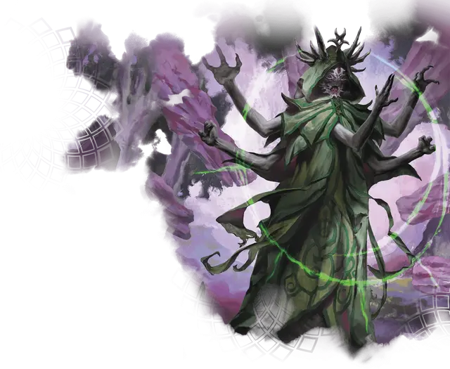

Демогот
Daemogoth
Огромное Исчадие, законно-злое

Класс Доспеха 16 (природный доспех)
Хиты 157 (15к12 + 60)
Скорость 40 футов, лазая 40 футов
| мод | спас | ||
|---|---|---|---|
| СИЛ | 19 | +4 | +4 |
| ЛОВ | 15 | +2 | +2 |
| ТЕЛ | 19 | +4 | +4 |
| мод | спас | ||
|---|---|---|---|
| ИНТ | 21 | +5 | +9 |
| МДР | 14 | +2 | +6 |
| ХАР | 18 | +4 | +8 |
Навыки Восприятие +6, История +9, Магия +13, Обман +12
Иммунитет к урону психическая энергия
Иммунитет к состояниям испуг
Чувства истинное зрение 120 футов, пассивное Восприятие 16
Языки Бездны, Инфернальный, Телепатия 120 фт.
Опасность 10 (5900 опыта)
Бонус мастерства +4
Особенности
Договор боли. Совершая 10-минутный ритуал, демогот может создать магическую связь с существом, к которому он прикасается на протяжении всего ритуала. Существо становится связанным договором до тех пор, пока оно не умрет, не умрет демогот или договор не будет нарушен любым эффектом, который может снять проклятие.
Демогот выбирает одно заклинание школы Некромантии или Очарования 3-го уровня или ниже. Связанное существо может наложить это заклинание, используя этот договор, без затрат материальных компонентов и используя Интеллект в качестве базовой характеристики. Когда оно накладывает заклинание, существо получает 7 (2к6) урона психической энергией, который не может нарушить концентрацию существа на заклинании. Как только связанное существо наложит заклинание таким образом, оно не сможет сделать это снова, пока не завершит продолжительный отдых.
Действия
Мультиатака. Демогот совершает три атаки Вспышкой агонии. Он может использовать Устрашение, если оно имеется, вместо одной из атак.
Вспышка агонии. . Рукопашная или Дальнобойная атака заклинанием: +9 к попаданию, досягаемость 10 футов или дистанция 120 футов, одна цель. Попадание: 11 (2к10) урона силовым полем. Если целью является существо, демогот восстанавливает 5 хитов.
Устрашение (перезарядка 4-6). Демогот нацеливается на одно существо, которое он может видеть в пределах 120 футов. Цель должна совершить спасбросок Мудрости Сл 17. При провале цель получает 33 (6к10) урона психической энергией и становится испуганной демоготом до конца следующего хода демогота, а демогот восстанавливает 5 хитов. При успехе цель получает половину этого урона и не пугается, а демогот не исцеляется.
Описание
Проскальзывая через самые темные уголки мира, демоготы - могущественные исчадия, питающиеся страданием и другими негативными эмоциями. Некоторые мудрецы называют демоготов пожирателями горя, из-за склонности демонов скрываться вблизи полей сражений и других мест великих трагедий, чтобы поглощать боль, пропитывающую местность.
Демоготы - это существа, обладающие запретными знаниями и магией, и все это подпитывается их потреблением страданий. Они обменивают магическое влияние на жизни и умы других амбициозных смертных в обмен на их агонию.
Демоготы выглядят крайне инопланарно. Их глаза насекомоподобные или гладкие и выпуклые, как сверкающие драгоценные камни, и у них пять рук. Обычно они носят длинные одежды, которые низко ниспадают на их фигуру, и украшены ореолом из рогов, оленьих рогов или плавающих камней или кристаллов.